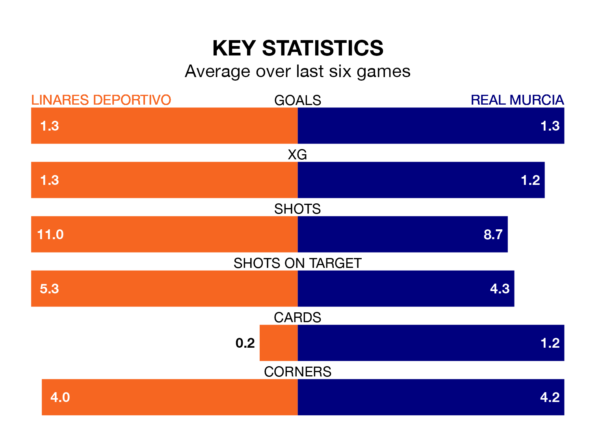

Linares Deportivo host Real Murcia on Sunday at Estadio Municipal de Linarejos in Primera Division RFEF Group 2.
In their last league match, on March 3, Linares Deportivo lost to Atlético Sanluqueño CF 2-1 at home, with their goal scored by Javier Duarte Egea.
Murcia won, 1-0 at home against Recreativo de Huelva.
With Manuel García Humanes between the sticks, Murcia can rely on one of the league's safest pair of hands. He has kept 10 clean sheets in his 19 appearances this season, and only one other 'keeper – Recreativo de Huelva's Rubén Ramos González – has been able to prevent the opposition scoring on more occasions in Primera Division RFEF Group 2.
In Linares Deportivo's net, Samuel Casado Conde has five clean sheets in 17 games. He has conceded a goal every 67 minutes, 40% more often than the 93 minutes between goals for García Humanes.
In the last 10 years, Linares Deportivo and Murcia have played each other on seven occasions. Linares Deportivo won one of them, Murcia five, and they drew once.
On average, Linares Deportivo scored 0.3 goals and Murcia 1.1 in those matches.
Their last meeting was on October 28, when Murcia won 1-0 at home.
The hosts are 17th in the table after 26 games, of which they have won seven and drawn six, earning 27 points.
The away team are eight places ahead of Linares Deportivo in ninth, with 10 wins and seven draws putting them on 37 points.
With 22 goals in 26 games so far this season, Linares Deportivo are scoring at below the league average rate with 0.8 goals per game. And they are conceding more than average, letting in 36 goals at a rate of 1.4 per game.
Murcia are also below average scorers, with 1.0 goal per game, compared to a league average of 1.1. They have conceded 1.1 goals per game.
The home side are in mixed form in Primera Division RFEF Group 2, with three wins and a draw from their last six games.
And also with three wins and a draw over that period, Murcia's form is identical – they have both taken 10 points from 18.
Updated: 09:34 (UTC), 08/03/24